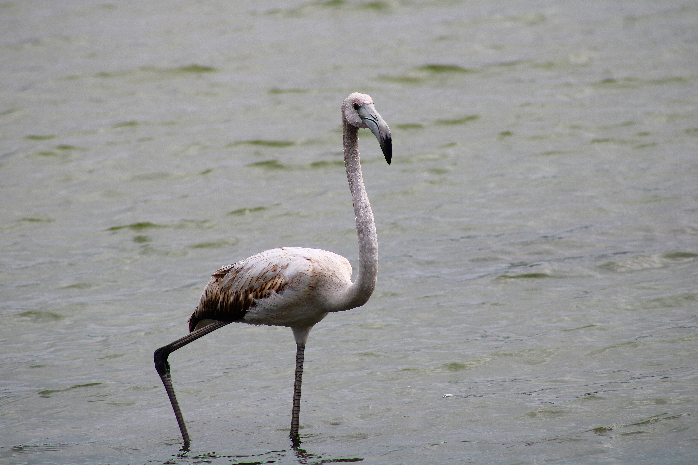
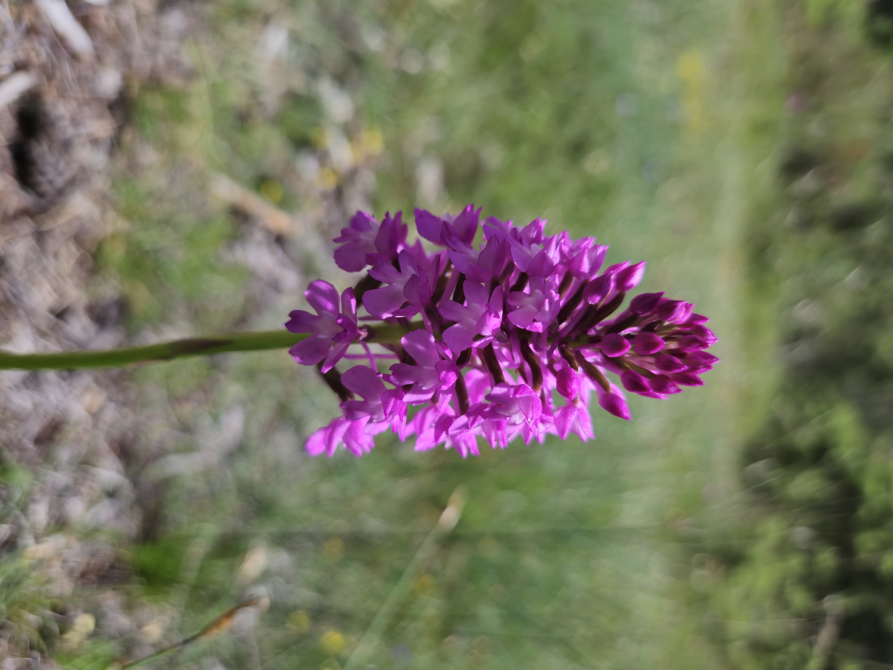
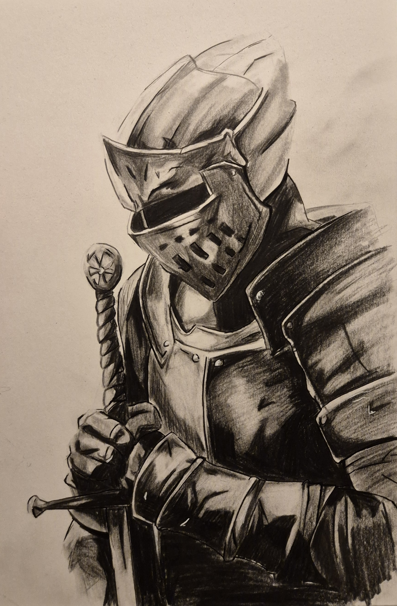

Photographie & explorations visuelles
Mes
Mes
créations.
Une galerie personnelle
Entre recherche visuelle, composition et photographie.
Une sélection d'images et de créations réalisées au fil de mes projets.



